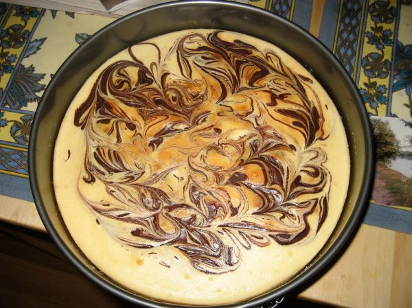

Chocolate Swirl Cheesecake

Photo: EvinDC (CC BY 2.0)
A baked cheesecake on a chocolate wafer crust with two swirled batters — one chocolate, one plain — made from cream cheese, eggs, and sour cream in a springform pan.
Directions
- Heat oven to 350 degrees. Lightly butter 8 inch springform pan.
- Prepare crust. Mix all ingredients except butter in bowl. Drizzle butter over mixture and stir till crumbs are moist. Press over bottom and halfway up side of buttered pan. Bake 6 minutes. Let cool and refrigerate until cold.
- Heat oven to 425 degrees.
- Prepare filling. Melt chocolate in top of double boiler over boiling water.
- Beat cream cheese and granulated sugar in mixing bowl till light and fluffy. Beat in eggs one at a time, then beat in vanilla. Divide batter in half.
- Beat 1/3 cup sour cream, brown sugar and melted chocolate into 1/2 the batter. Beat remaining 2/3 cup of sour cream into second half. Pour chocolate batter into chilled crust. Gently pour white batter on top. Swirl batters with thin knife.
- Bake cake 12 minutes. Reduce heat to 250 and bake till 1 inch circle in center of cake is barely soft 55-60 minutes. Let cool on wire rack , then refrigerate several hours or overnight.
- Heat the oven to 350 degrees. Lightly butter an 8-inch springform pan.
- Make the crust: mix the crushed chocolate wafers and cocoa powder in a bowl (all crust ingredients except the butter). Drizzle the melted butter over the mixture and stir until the crumbs are moist.
- Press the crumbs over the bottom and halfway up the side of the buttered pan. Bake 6 minutes. Let cool, then refrigerate until cold.
- Heat the oven to 425 degrees.
- Make the filling: melt the chocolate bits in the top of a double boiler over boiling water.
- Beat the cream cheese and granulated sugar in a mixing bowl until light and fluffy. Beat in the eggs one at a time, then beat in the vanilla. Divide the batter in half.
- Beat 1/3 cup of the sour cream, the brown sugar, and the melted chocolate into half the batter. Beat the remaining 2/3 cup sour cream into the second half.
- Pour the chocolate batter into the chilled crust. Gently pour the white batter on top. Swirl the batters together with a thin knife.
- Bake the cake 12 minutes. Reduce heat to 250 degrees and bake until a 1-inch circle in the center of the cake is barely soft, 55-60 minutes.
- Let cool on a wire rack, then refrigerate several hours or overnight.
Goes well with
https://lizotte.cool/recipe/chocolate-swirl-cheesecake.html